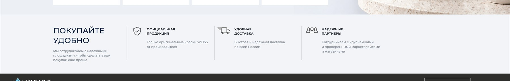
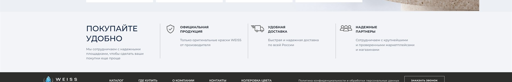
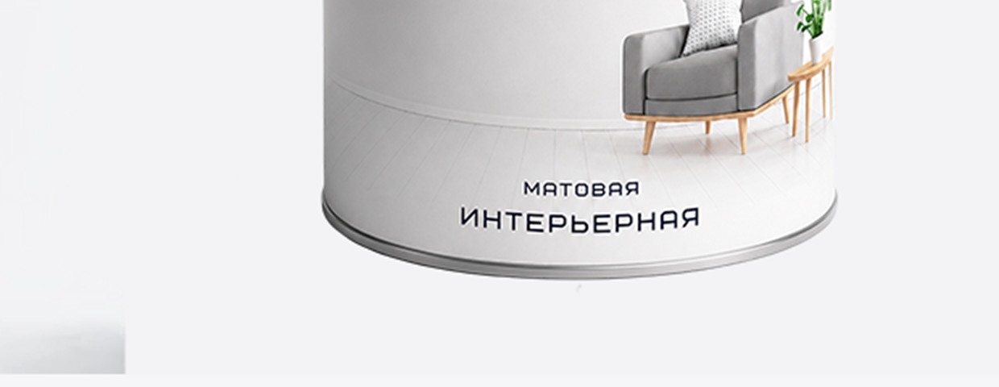
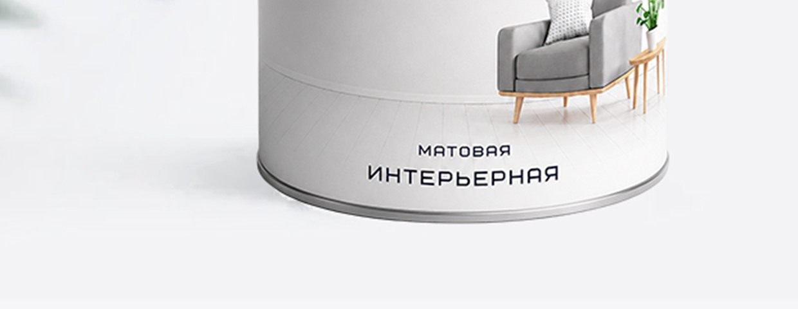
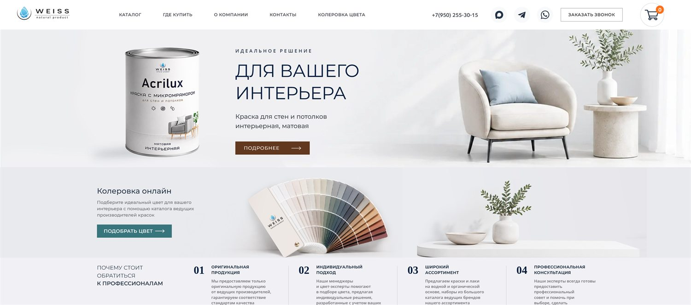
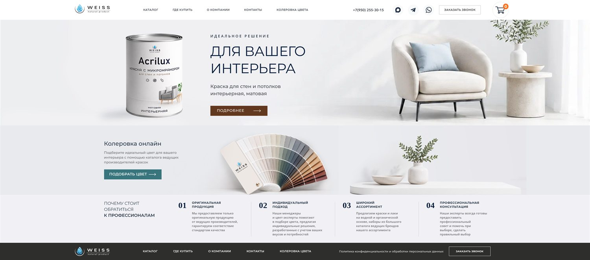
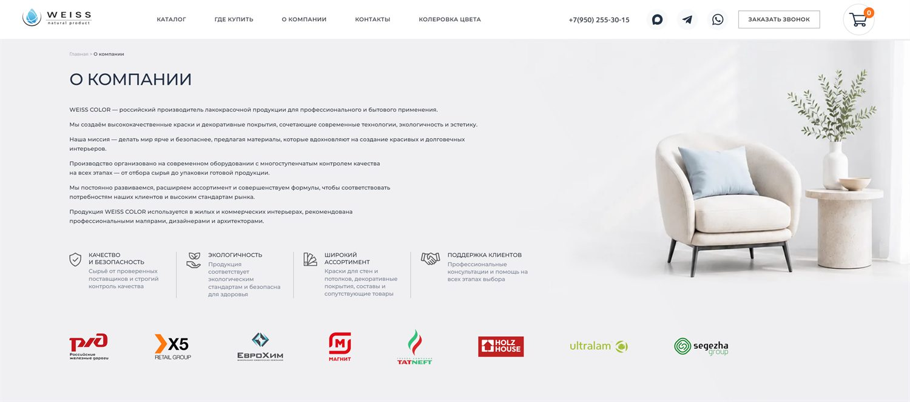
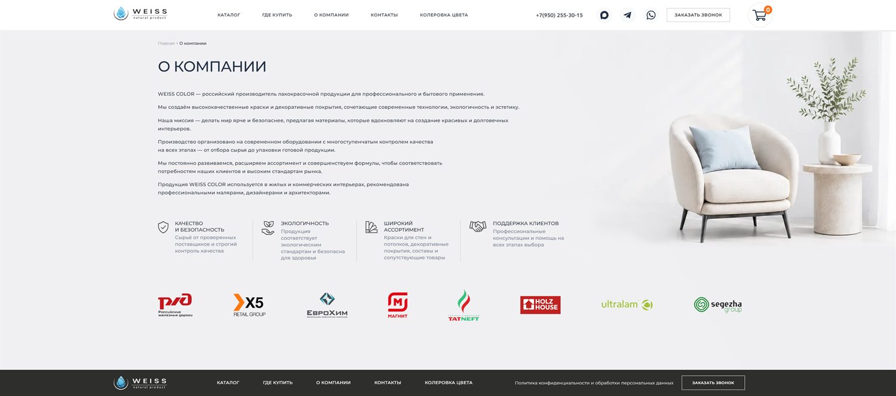

Скриншоты сняты в headless Chrome при ширине окна 2936 px (как на вашем экране) и 2560 px. Старая версия — коммит до правок, новая — текущая сборка.
Окно 2936×1440. Слева было: блок прижат к левому краю полотна 2560, справа 682 px пустоты.


| Окно | Слева / справа (было) | Слева / справа (стало) |
|---|---|---|
| 2560×1440 | 306 / 306 | 306 / 306 (без изменений) |
| 2936×1440 | 306 / 682 | 494 / 494 |
Окно 2936×1440, нижний левый угол банки. Фон героя тянулся по ширине окна (cover), а банка заморожена по макету — подложка не совпадала с полом.


Главная и «О компании», окно 2936×1300. Страница была 1467 px при окне 1300: подвал уходил за экран на 167 px. Теперь при ≥2560 и запасе до 12% высота подгоняется масштабом (0.9–1.0) — подвал виден сразу.




| Ширина окна | Страницы | Результат |
|---|---|---|
| 1920×950 | о компании, где купить, товар, контакты, правовой | Попиксельно совпадает со старой версией |
| 2560×1440 | о компании, где купить, товар, контакты, правовой | Попиксельно совпадает с макетом 2560 |
| 2936×1440 | все 7 экранов | Прокрутки нет, полотно по центру |
| 2936×1300 | все 7 экранов | Подгонка 0.9 — подвал в экране, прокрутки нет |
| 3440×1440 | все 7 экранов | Полотно по центру, прокрутки нет |